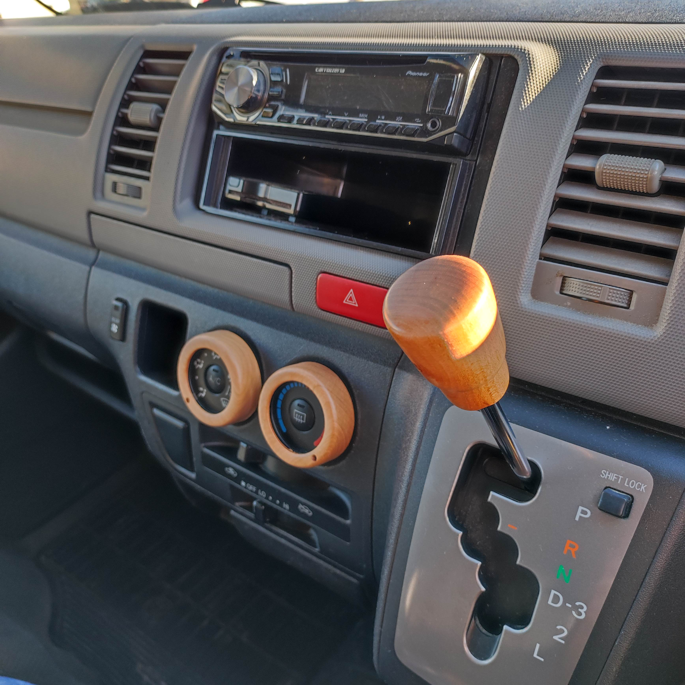
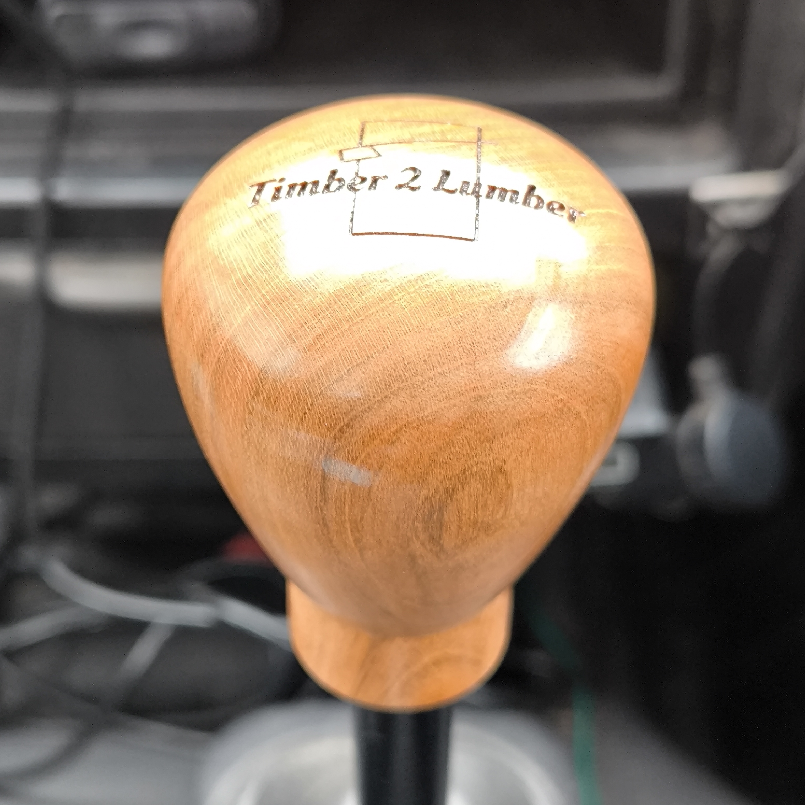
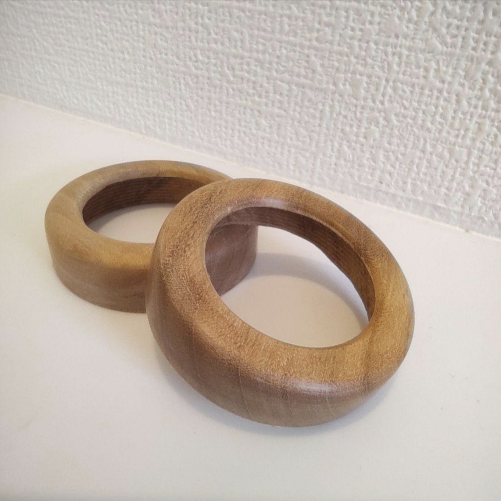
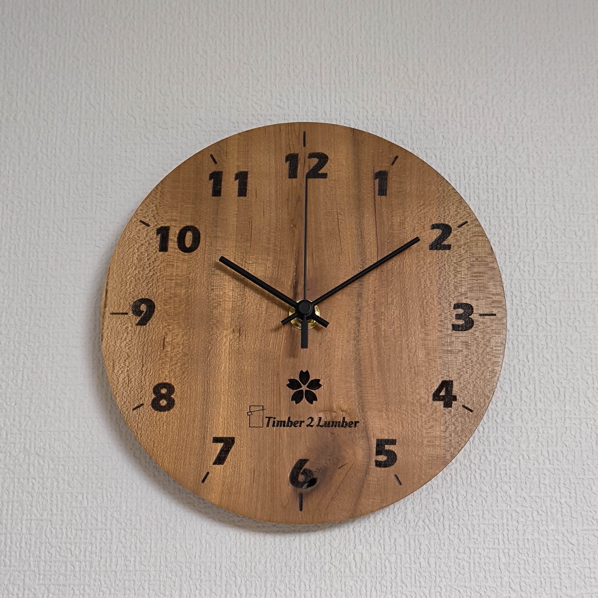

その木に、似合うものを。
木目も、形も、寸法も、一本ずつ違う。つくるものを先に決めて木を当てはめるのではなく、その木を見て、何にすればいちばん魅力が生きるのかを考える。その一本にしかない個性を、日常で味わう贅沢へ。
AKITA / WOOD / AUTOMOTIVE
秋田で自ら木を伐り、削り、道具へ。
豪雪や暴風にさらされて育った野生の山桜をはじめ、ふつうには手に入りにくい木を自ら製材。数年の天然乾燥を経て、一本ごとの個性を見極め、その木に似合う道具へ仕立てています。

WHY T2L / AUTOMOTIVE
木目も、形も、寸法も、一本ずつ違う。つくるものを先に決めて木を当てはめるのではなく、その木を見て、何にすればいちばん魅力が生きるのかを考える。その一本にしかない個性を、日常で味わう贅沢へ。
木でつくるだけでは、車の道具にはなりません。車種や取り付け規格を確かめ、きちんと使えることを前提に、木が車内に自然に馴染むかたちを考える。機能はそのままに、車内の景色を少しだけ特別に。
シフトノブは、眺めるだけのものではなく、毎日手に触れる道具。大きさやかたち、手触り、仕上げまで、握ったときの心地よさを考えて仕立てます。触れるたびに、木を選んだ理由が深まるものへ。
SHIMOHAMA / AKITA / JAPAN
秋田市下浜。日本海から望む国見山の西側に、Timber 2 Lumber の森があります。
夏、下浜の海はベタ凪になり、湖のように静まる。
冬は一転、日本海からの強風が雪を横殴りに山へ叩きつける。
静けさと荒々しさが同居するこの土地で、木々は一本ずつ違う姿に育っていきます。
私たちが見ているのは、樹種名や寸法でひとまとめにされた「木材」ではありません。
この場所で、この時間を生きてきた、その一本の木です。
PRODUCTS

AUTO
毎日握る場所だからこそ、手触りも、かたちも、その一本らしく。山桜を中心に、車種や取り付け規格に合わせて仕立てます。

AUTO
シフトノブだけでなく、エアコンダイヤルやアシストグリップにも。木の質感を点ではなく、車内の景色としてつないでいきます。

LIVING
時計や照明など、暮らしの中にも木の時間を。その木の形や木目を見ながら、一本ごとに似合うかたちを考えます。
BRAND CONCEPT / MA
早さや効率がもう充分に行き渡った暮らしへ、
木目の奥に山が見える贅沢を。
木が育つ時間。伐られた木が乾く時間。道具として形になる時間。そして、使う人とともに過ごしていく時間。
早さや効率だけでは生まれない、その余白を Timber 2 Lumber は「間」と呼んでいます。
そして、その「間」こそが、私たちが届けたい一番の価値です。
Timber 2 Lumber
VISIT / FOLLOW / SHOP